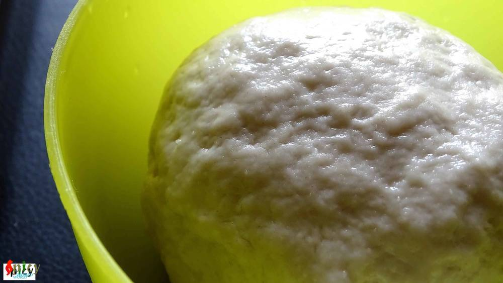
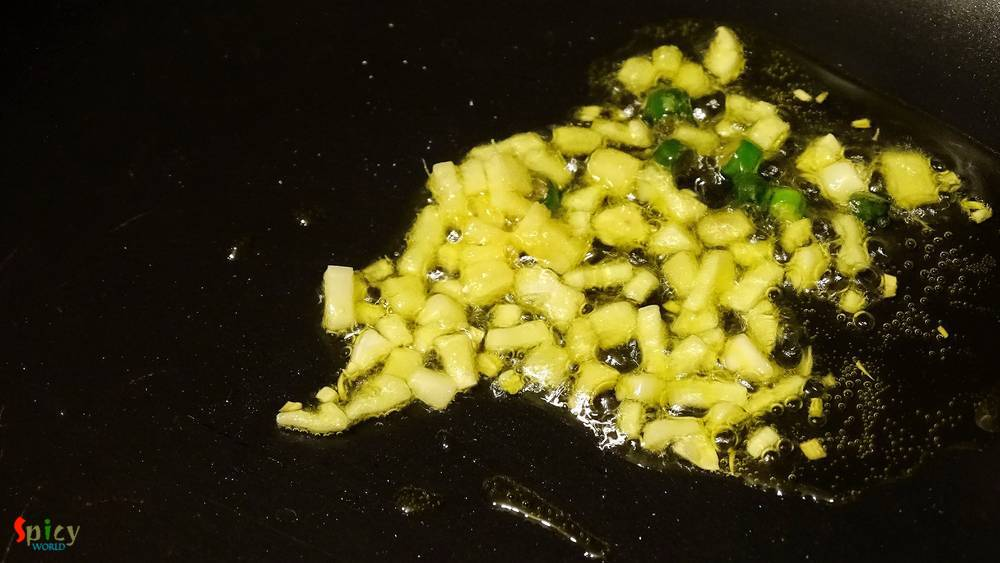
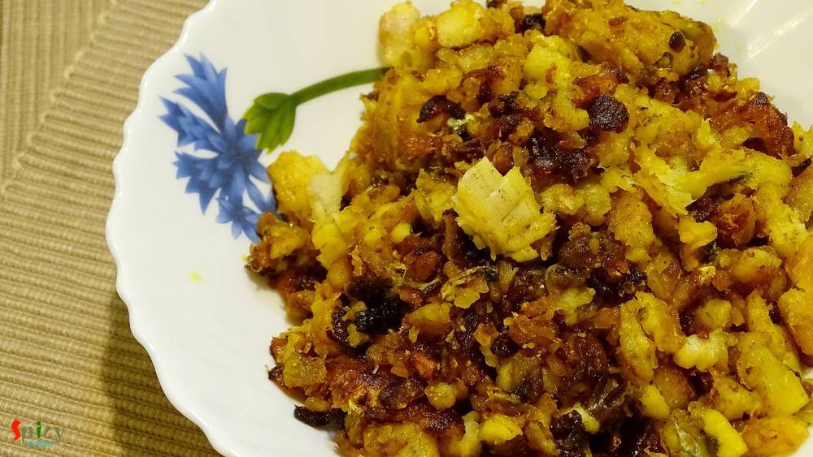

Simple and Easy Recipes
Fish Kachori / Macher Kochuri
© 2016 Spicy World, Published on: Mar 16, 2016
If fish is the right hand of our cooking, then 'kochuri' must be the left hand. Both of them are quintessential part of Bengali cuisine. Almost every weekend our breakfast has to be 'luchi' or 'kochuri' and on special day or maybe on guests arrival 'stuffed pooris' are inevitable. In this recipe soft and flaky pooris are stuffed with spicy, crumbled fish filling. After one bite, you can't resist yourself from having more. For this dish always use oily fish. So, whenever you are planning to make 'kochuri', try them with this spicy fish filling and enjoy a great meal.

Ingredients
- 1 cup of all purpose flour / maida.
- 2 to 3 fish fillets or with bone fish.
- Salt.
- 1 Teaspoon of turmeric powder.
- Half cup of chopped onion.
- 1 Teaspoon chopped garlic.
- 2 Teaspoons of chopped green chilies.
- Spice powder (1 Teaspoon of red chilli powder, 1 Teaspoon of cumin powder, 1 Teaspoon of garam masala, Pinch of amchoor powder).
- Half Teaspoon of gram flour / besan.
- 2 Teaspoons of mustard oil.
- Warm water.
- Lots of white oil.

Steps
Take flour, pinch of salt, 1 Tablespoon of oil in a mixing bowl. Mix them well.
Gradually add warm water and start mixing the flour.
Then knead the dough properly for 1 - 2 minutes and keep it aside with vover for 20 minutes.

If you are using with bone fish, then fry them first with some salt and turmeric, debone them and use afterwards.
With fish fillets you don't have to fry them first. Marinate them with little salt and turmeric powder. Keep aside.
Heat mustard oil in a pan. Add chopped garlic. Saute for 40 seconds.

Then add chopped onion and fry them for 3-4 minutes.
Now add the marinated fish fillets or deboned, crumbled fish. Fry them for 4-5 minutes.
Add all the spice powder, mix well for 3 - 4 minutes and crumble the fish fillets with your spatula little bit.
Lastly sprinkle some besan all over the mixture. Give it a good mix and turn off the heat.
The filling is ready.

Make lemon size balls out of the dough and place 1 - 2 Teaspoons filling in the center of a ball.
Seal the edges properly and flatten it with your hand to 1-2 inches.
Then with the help of rolling pin flatten it to 4 - 5 inches. Do the same with rest of them.
After that fry them in hot oil for 2-3 minutes.
Remove them from oil and serve hot.
Your fish kachori is ready ...
Enjoy them hot with some curry ...
")